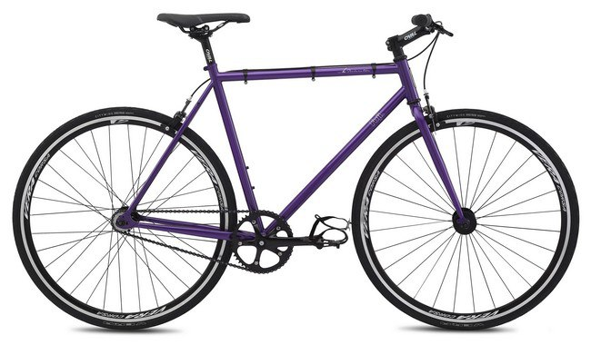
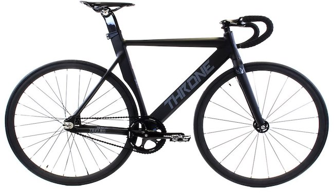

Прежде всего, необходимо определиться с тем, для чего вам нужен велосипед. Многие проблемы исходят как раз из неправильной оценки необходимости того или иного велика. Если вы ищете велик для неспешных прогулок по парку пару раз в неделю или поездки с утра за кофе, то у меня для вас плохие (относительно) новости — фиксед гир, скорее всего, вам не нужен и стоит переключить свой интерес на удобный сингл-спид велосипед или городской комьютер, он подойдёт вам на 100%. Если вы уже на таком покатались, а жажда новых эмоций заполняет вас всё больше и больше, вы хотите попробовать что-то, казалось бы, обыденное, но в тоже время необычное и новое, то мир фиксед гира ждёт вас!

После того, как вы решили, что фикс просто необходим, есть два пути: приобрести уже готовый велосипед, либо собирать его самому. На роль первого велосипеда отлично подойдет уже готовый комплит и по мере необходимости, вы сможете менять на нем какие-либо запчасти. Среди готовых комплитов можем порекомендовать такие бренды как: Fuji(Classic Track, Declaration), Throne, Aventon, Zycle Fix(Prime), Merida. Это всё неплохие начальные велосипеды стоимостью от 20 до 40 тысяч рублей.

Не стоит сбрасывать со счетов и рынок б/у велосипедов, здесь список брендов гораздо шире и стоит отталкиваться от вашего бюджета и визуальных предпочтений. Основной совет, который мы можем дать — это избегать разноцветно-кислотных великов с авито и других мутных сайтов. Так же мы не рекомендуем велосипеды марки ХВЗ в роли первого байка и уж точно не советуем собирать фиксы на шоссейных рамах.
Почему же «Фуджи»? Во-первых это 100% совместимости с современными запчастями и вам удастся избежать «колхоза» со стачиванием подседелов до 25.0 мм, перенарезки резьбы в каретке и поиском рулевых под этот ваш «ХВЗ Рекорд». Во-вторых, это универсальная база, на которой можно собрать почти все что угодно, даже стильную месслайф-тачку.…

.png)
.png)
.png)